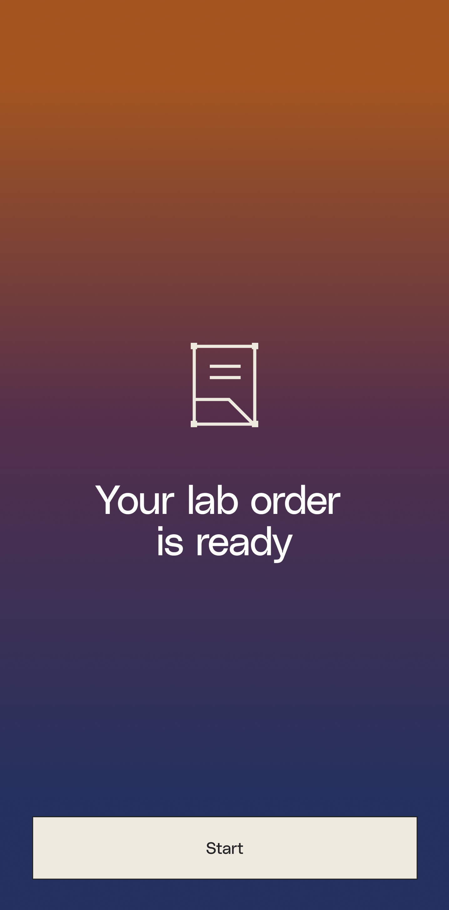
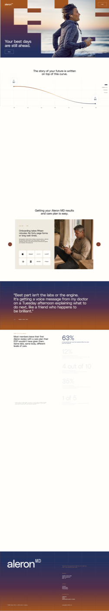
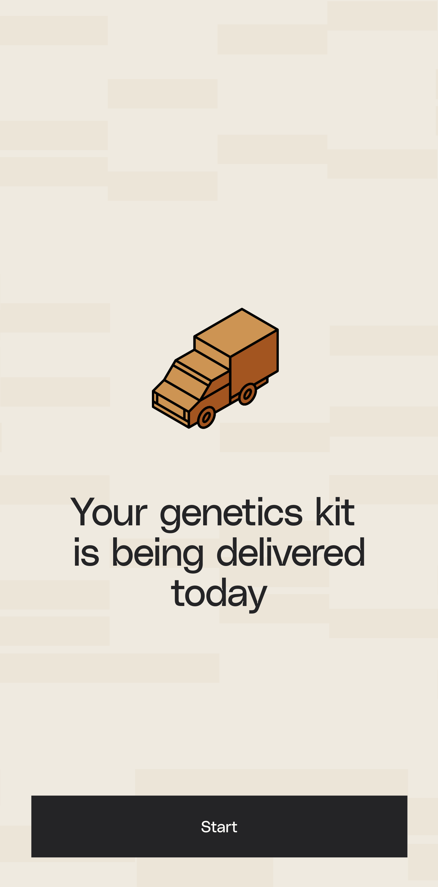
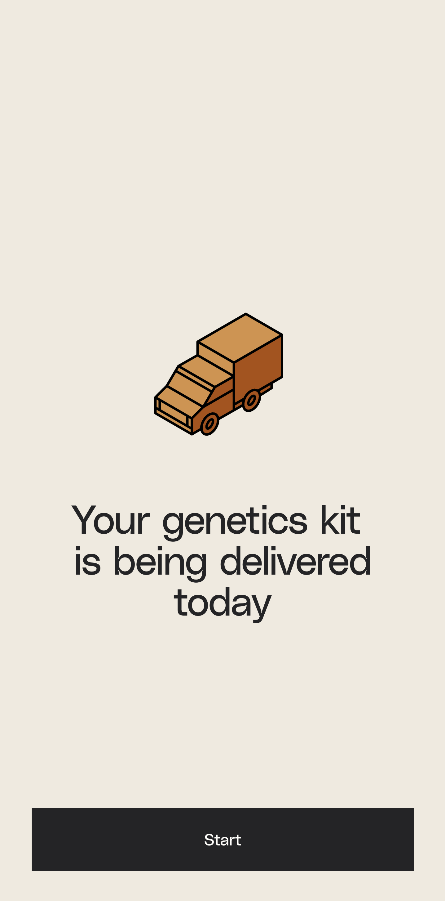
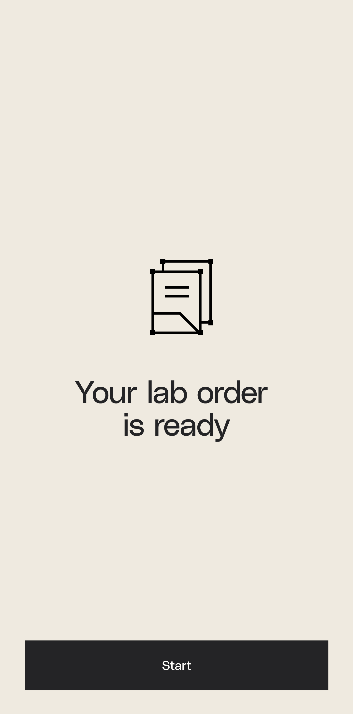

This is the identity document for aleron MD. One brand, one lane, one central idea. It crystallizes how the practice looks, sounds, and behaves across every marketing surface. It does not replace the design system. It tells you what the design system is for.
aleron MD is a premium, physician-led preventive medicine practice. It combines deep diagnostics, genetics, wearable data, and physician judgment into a domain-by-domain risk picture, then turns that picture into a plan for what matters next. The category comes before the product. We do not sell a tool or a dashboard. We sell the years a person gets to spend doing the things they want to do, and the medical team that helps protect them.
The capability curve is the brand's central idea. Everything else, the palette, the voice, the photography, the motion, exists to make that idea legible and felt.
Capability is your body's ability to do what you want in life. It holds a long plateau, then bends down with age and with what goes unprevented. The slope is being written right now, quietly, by what you do and what you catch early. The curve is not destiny. aleron exists to help a member plot a higher trajectory. Every marketing surface is a different view of this one drawing.
Your best days are still ahead. Capability, not age, is the thing we protect.
It is your body's ability to do what you want in life. It holds longer than people expect.
A serious event bends the line down fast. Most of the bend is quiet and preventable.
The curve is not destiny. We help plot a new trajectory and stronger golden years.
How surfaces relate back to it. A hero is the plateau. A diagnostics module is the slope made visible. A testimonial is one bent line. A pricing page is the cost of the lift. If a surface cannot be traced to the curve, it is decoration, and decoration gets cut.
Vanilla copy is a content problem, not a tone problem. Say the specific true thing. Sell what the product enables, not that a tool exists. Name the marker, the panel, the next step. The rules below are binding. Each pair shows the move we make and the move we never make.
The output is not a report. It is a plan for what matters next.
Get a comprehensive wellness report and unlock your health potential.
The Elite panel includes the ApoB and Lp(a) 72 nmol/L markers most physicals miss.
Advanced biomarkers for total-body optimization and peak longevity.
Spit in a tube. Drop it in the prepaid mailer. Onboarding takes fifteen minutes.
Our seamless, frictionless onboarding journey is designed around you.
We catch the signal before you feel the symptom.
Revolutionary AI-powered insights to transform your healthspan.
A physician who has your full picture. No repeating yourself.
Concierge care with white-glove, members-only access to elite doctors.
The curve is not destiny. We help you plot a new trajectory.
Live longer, feel younger, and beat aging with science.
No em dashes anywhere in prose. Use periods, commas, or restructure. Short declarative sentences carry the physician-led tone.
Acquisition is Apply for Membership or Apply. Account entry is Log In. Never Join. Never Demo as a primary CTA.
Always carry units. Lp(a) 72 nmol/L, never Lp(a) 72. Precision is the brand's proof of physician authorship.
Warm, quiet, premium, editorial. Navy, bronze, rust, and cream. Square edges everywhere. The uppercase-A black and tan lane is a different brand. Never mix the two.
Hex values and token names are pulled from tokens.css. Cite the token, not the raw hex, in production code.
Domain data-viz colors (cardiac, cancer, metabolic, neuro, independence) exist in the tokens for the member app only. They never become UI chrome, borders, or body text on marketing surfaces.
Border radius is --amd-radius-none, zero, unless a source asset demands otherwise. Buttons, cards, swatches, image frames, and the icon tile are all square. Layered heroes are built from offset rectangular blocks, the venetian grammar seen on the cover and in the figma hero exports. The squareness is the brand's spine. It reads as clinical, exact, and unfussy.

Human, editorial, diverse. Real people in real light, mid-life and older, doing the things the curve protects. Large, tight crops. Product-accurate, never stock-medical. Faces and hands carry the emotion. Color-grade toward the warm lane so the navy and rust overlays sit naturally.

Texture is quiet, never decorative noise. Three approved studies, plus two illustration modes for moment screens. Reference the texture studies in the figma snapshot before inventing a new background.



Four families, each with a job, all from the design system. Display and headings in Inter Tight, tight tracking, low line height. Body in Inter at a comfortable measure. Source Serif 4 for testimonials and editorial pull quotes. JetBrains Mono for labels, clinical values, and tokens.
One headline per surface earns display size. Step down hard between levels. The jump from display to body is the hierarchy. Do not crowd the scale with near-equal sizes.
Body text holds to 68ch. Long lines break the editorial calm. Headlines run shorter, often capped near 14 to 18 characters per line for punch.
No rounded-pill eyebrows above headlines. Use a mono label with a numeric index instead, the pattern at the top of every section here.
Scroll-driven storytelling, layered and parallax heroes, modules that feel live. Motion is meaningful and restrained, it earns its place by clarifying the curve. The reference bar is the pitch deck. Mechanisms, not just words and pictures. The curve above draws itself once, on first view. That is the ceiling for decoration, and it still serves the idea.
Prospective members come first, employers and brokers second. The voice, palette, and curve do not change between them. What changes is the unit of value and the call to action. Individuals hear about their own years. Employers hear about a population and a path to contact.
Your best days are still ahead. Let's protect the years you actually want to spend.
Second person, singular. The benefit is personal capability. Specificity earns trust: named panels, real markers, a fifteen minute start. The page ends on the individual path.
Catch risk early across your people, and keep your highest performers in the game longer.
Plural unit of value, still grounded and honest. No HR jargon, no generic wellness ROI claims. The path is a conversation, not a checkout. Same lane, same curve, wider lens.
When a judgment is close, this is the tiebreaker. Each pair names the rule it enforces.